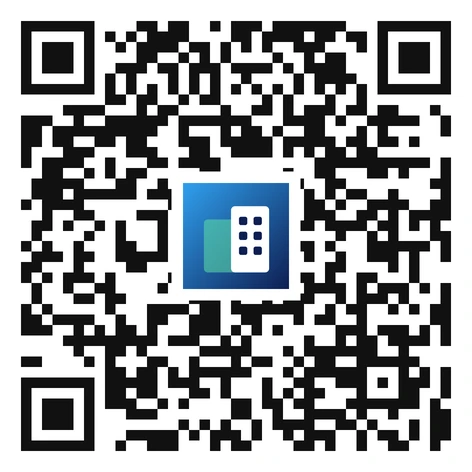

9개 동의 에너지 · 설비 · 환경 · 재실 정보를 하나의 디지털 트윈으로 묶고,
그린동 리빙랩 실증에서 68.9%의 일간 전력 절감을 확인했습니다.
건물의 형상과 에너지·설비·환경·재실 정보를 하나의 가상 모델에 담아, 실제 건물의 상태를 그대로 비추고 운전 판단까지 지원하는 관리 체계다.
전력량계·가스온압보정기·열량계를 신규로 설치하고, 이미 돌아가고 있던 BAS·전력 BAS·태양광 모니터링 시스템·태양동산 서버를 하나의 PostgreSQL 서버로 연계했다. 모든 데이터는 1분 단위로 쌓인다.
게임 엔진으로 건물군을 사실적으로 모델링하고 실데이터를 얹었다. 에너지공단 설치확인 9개 평가항목을 모두 만족하는 기본기능 위에, 설비 간·건물 간 에너지 흐름 같은 고유기능을 더했다.
제로에너지건축물 인증 의무화가 2025년 민간 1,000㎡ 이상에서 시작해 2030년 500㎡ 이상으로 넓어지면서 BEMS 수요가 커지고 있다. 반면 연구원은 전체 소비량만 알 수 있어 세부 진단이 불가능했고, 수동적 관리 체계를 능동적 통합관리로 바꿀 필요가 있었다.
최종 목적지는 사람이 쓰는 사무실이다. 그린동 412·412-1·412-2호에서 재실 정보만으로 EHP와 조명을 직접 제어한다.
재실 감지
부재 지연 판단
설정온도 조정
소등 · 운전 정지
디지털 트윈 BEMS는 연구원 9개 동을 대상으로 구축을 마쳤고, 재실 기반 제어는 그린동 리빙랩 2개 실에서 겨울철 약 3주간 검증했다. 실외기를 공유하는 측정 구조와 짧은 수집기간이 남은 한계이며, 냉방기·간절기 장기 데이터 확보와 제어 범위 확대가 다음 과제다.
| 세부목표 | 주요 수행 내용 | 결과 |
|---|---|---|
| 디지털 트윈 기반 BEMS 개발 | 에너지 계측·통신 장비 설치, 데이터 수집 시스템 구축, BEMS 소프트웨어 개발 | 달성 |
| 그린동 제어 실증 | 리빙랩 EHP·조명 제어 환경 구축, 재실 정보 기반 제어 결과 분석 | 달성 |
최종 목표 — 연구원 건물군을 대상으로 디지털 트윈 기반 BEMS를 구축하고, 제어 기술 실증을 통해 20%의 건물 에너지 절감 가능성을 검증.
| 건물 | 전력량계 | 가스온압보정기 | 열량계 | 통신 게이트웨이 |
|---|---|---|---|---|
| 에코동 | 41 | 3 | 9 | 1 |
| 행정동 | 16 | – | 3 | 1 |
| 복합동 | 17 | 1 | 1 | 1 |
| 융합동 | 24 | 4 | 5 | 1 |
| 계 | 98 | 8 | 18 | 4 |
| 장비 | 모델 | 제조사 | 주요 사양 |
|---|---|---|---|
| 전력량계 | GEMS3500 | 엔텍시스템 | 최대 54채널 · 690VAC · IEC-62053-21/22 · Modbus RTU/TCP |
| 가스온압보정기 | GVC-750RE Ⅲ | 도담에너시스 | 0~20 bara · −20~50℃ · 정확도 0.30% · IP65 |
| 열량계 | TFM-100 | 태흥M&C | 초음파식 · 관경 15~6,000mm · 정확도 ±1% of F.S. |
| 통신 게이트웨이 | MGate MB3280 | MOXA | RS485 Modbus → Modbus TCP/IP 변환 |
그린동과 태양동산은 신규 장비 설치 없이 기존에 구축된 시스템의 데이터만 연계함.
| 데이터 종류 | 대상 건물 | 데이터 원 |
|---|---|---|
| 전력 소비량 | 에코 · 행정 · 복합 · 융합동 | 전력량계, 전력 BAS |
| 전력 소비량 | 태양동산 | 태양동산 서버, 전력 BAS |
| 전력 생산량 (태양광) | 에코 · 행정 · 복합동 | 전력량계 |
| 전력 생산량 (태양광) | 융합동 | 전력량계, 태양광 모니터링 시스템 |
| 가스 소비량 | 에코 · 복합 · 융합동 | 가스온압보정기 |
| 열량 | 에코 · 행정 · 복합 · 융합동 | 열량계 |
| 설비 운영 정보 | 에코 · 행정 · 복합 · 융합 · 그린동 | BAS |
| 실내 환경 정보 | 에코 · 행정 · 복합 · 융합 · 그린동 | BAS |
| 날씨 | – | BAS, 태양동산 서버, 기상청 단기예보 API |
| 구분 | 내용 |
|---|---|
| 서버 | 융합동 413호 · Intel i7-13700K · DDR5 32GB · NVMe 2TB · HDD 4TB · Windows 11 Pro |
| DBMS | PostgreSQL (ORDBMS) · 관리도구 pgAdmin 4 · 자체 개발 프로그램으로 1분 단위 저장 |
| 주요 테이블 | tb_powermeter · tb_gasmeter · tb_ultrasonic · tb_pv_w2 · tb_bas_e1~e3 · tb_bas_w1~w2 · tb_elecbas · tb_sungarden · tb_weather 등 |
| 통신 IP | 신규 계측 장비 102개 (전력량계 98 + 게이트웨이 4) · 기존 데이터 연계 3개 |
BAS 데이터 연계를 위해 BACnet을 Modbus TCP/IP로 변환하는 컨버터를 추가 구매해 에코동에 설치함.
| No. | 메뉴 | 기능 분류 | 특징 |
|---|---|---|---|
| 1 | 메인 | 고유기능 | 에너지 소비량, 열쾌적성, 재실정보를 건물별로 시각화 |
| 2 | 설비 간 에너지 | 고유기능 | 주요 기계설비 간 실시간 생산·소비 에너지 흐름 |
| 3 | 건물 간 에너지 | 고유기능 | 건물 사이의 실시간 에너지 흐름 |
| 4 | 에너지관리 | 기본기능 | 건물·층별 에너지 데이터 조회와 관리, 에너지 예측 포함 |
| 5 | 설비관리 | 기본기능 | 건물·층별 설비 운영 데이터 조회, 성능 및 효율 분석 |
| 6 | 환경관리 | 기본기능 | 건물·층별 실내외 환경 데이터 조회 |
| 7 | 비용관리 | 기본기능 | 건물별 에너지 비용 조회와 분석 |
| 8 | 정보감시 | 기본기능 | 이상 에너지 사용, 실내 환경 기준치 초과 시 알람 조회 |
| 9 | 제어 | 기본기능 | 그린동 리빙랩 대상 EHP·조명 제어 |
| 10 | 설정 | 기타 | 설정 값 조정 |
언리얼 엔진 + PostgreSQL 플러그인으로 개발. KS F 1800-1·2와 에너지관리시스템 설치확인업무 운영규정의 9개 평가항목(데이터 수집·표시, 정보감시, 데이터 조회·관리, 에너지소비 현황 분석, 설비 성능·효율 분석, 실내외 환경 정보 제공, 에너지소비량 예측, 에너지 비용 조회·분석, 제어시스템 연동)을 모두 만족하도록 설계함.
| 구분 | 일자 | 전력 소비량 (kWh) | 일평균 (kWh) |
|---|---|---|---|
| 스케줄 기반 | 1월 27일 | 76.8 | 69.6 (A) |
| 스케줄 기반 | 1월 28일 | 62.4 | 69.6 (A) |
| 재실 정보 기반 | 1월 29일 | 9.6 | 21.6 (B) |
| 재실 정보 기반 | 1월 30일 | 12.0 | 21.6 (B) |
| 재실 정보 기반 | 1월 31일 | 7.2 | 21.6 (B) |
| 재실 정보 기반 | 2월 1일 | 33.6 | 21.6 (B) |
| 재실 정보 기반 | 2월 2일 | 45.6 | 21.6 (B) |
| 절감률 | A → B | 69.6 → 21.6 | 68.9% |
리빙랩 3개 실 중 412호는 사용자 동의를 얻지 못해 제외하고 412-1·412-2호 2개 실에 제어를 적용함. 부재 지연시간은 EHP 15분, 조명 10분이며 데이터는 Yokogawa GM10 DAQ로 1분 단위 수집함. 세 실의 실내기가 하나의 실외기에 연결돼 있어 실외기 전력만으로는 제어 영향도를 정밀하게 분리하기 어려우며, 수집기간이 짧아 냉방기·간절기 장기 데이터 확보 후 재분석이 필요함.